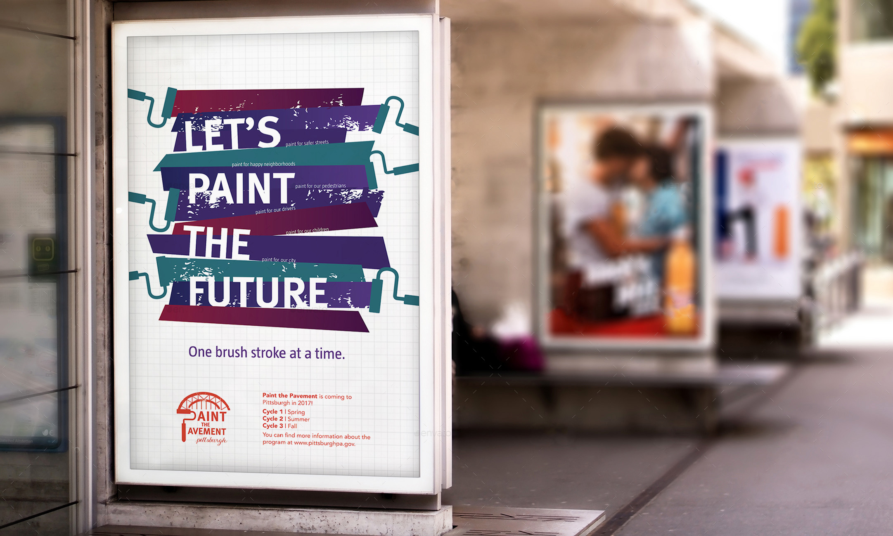
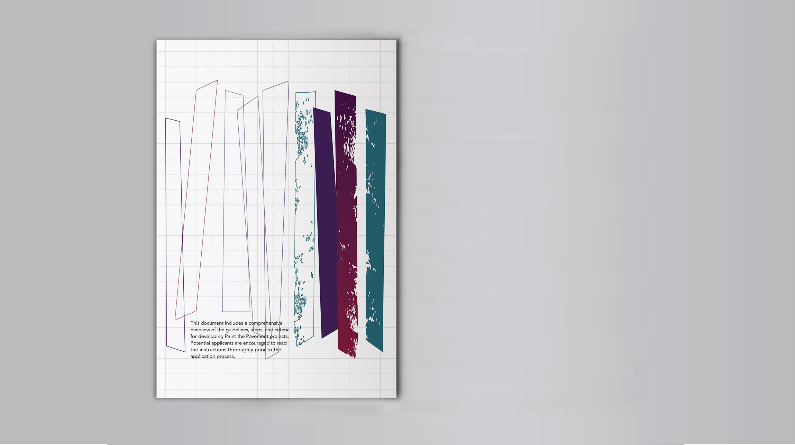
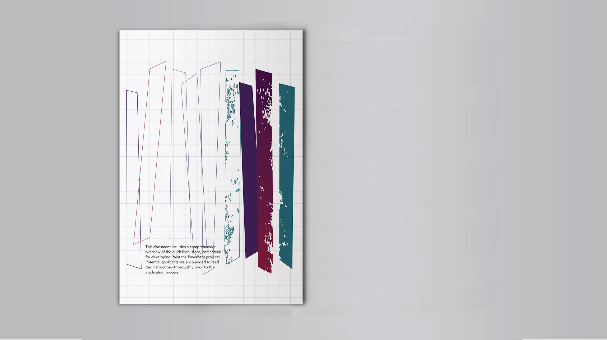
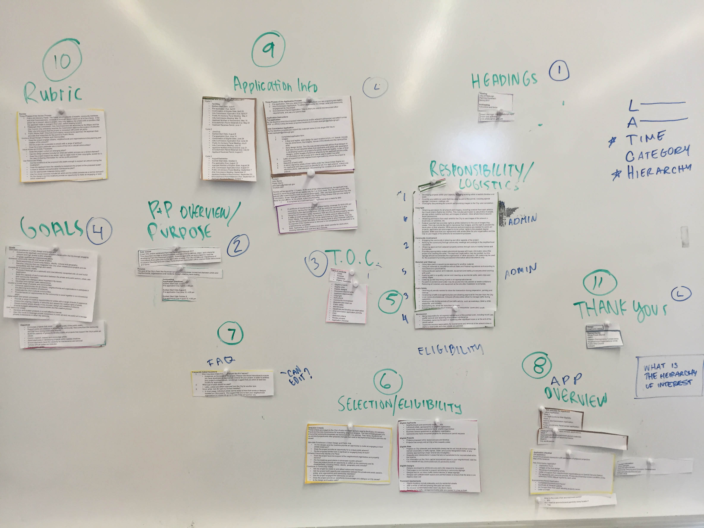
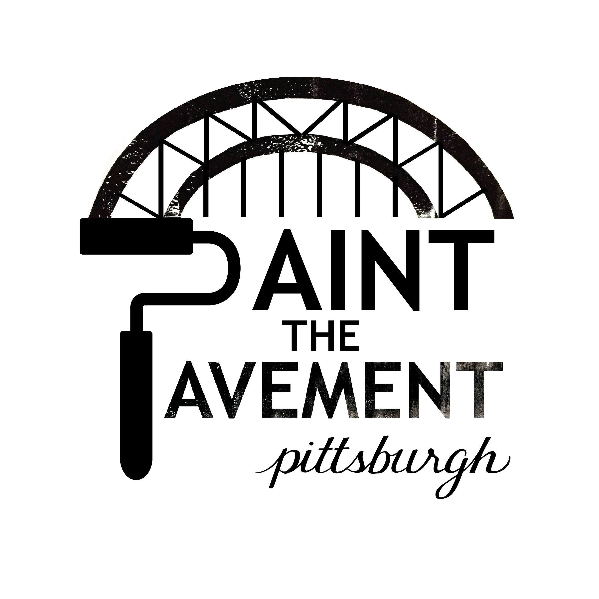
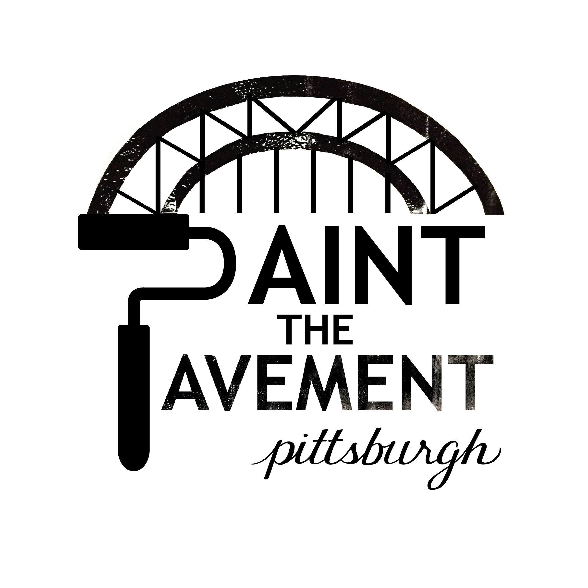
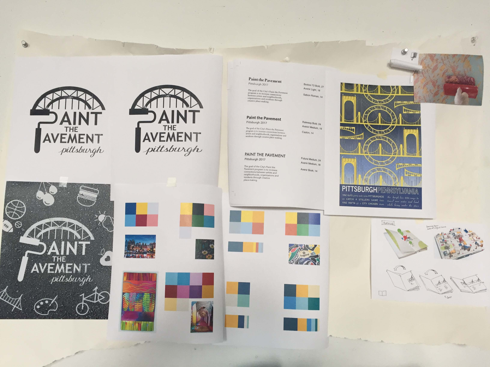
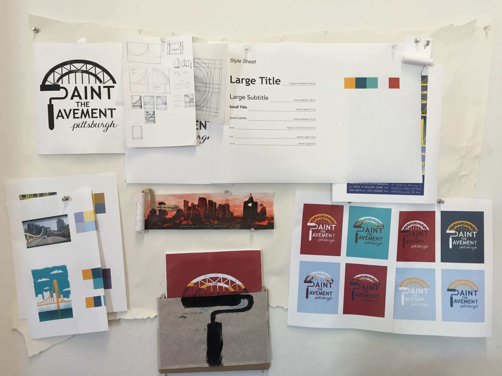
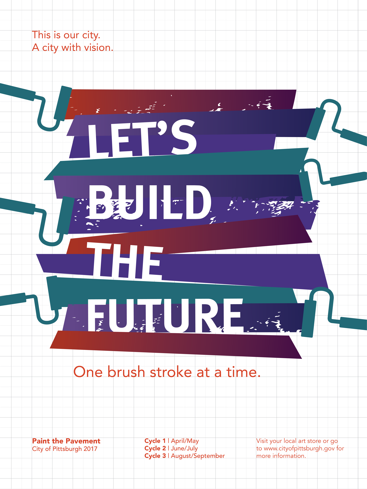
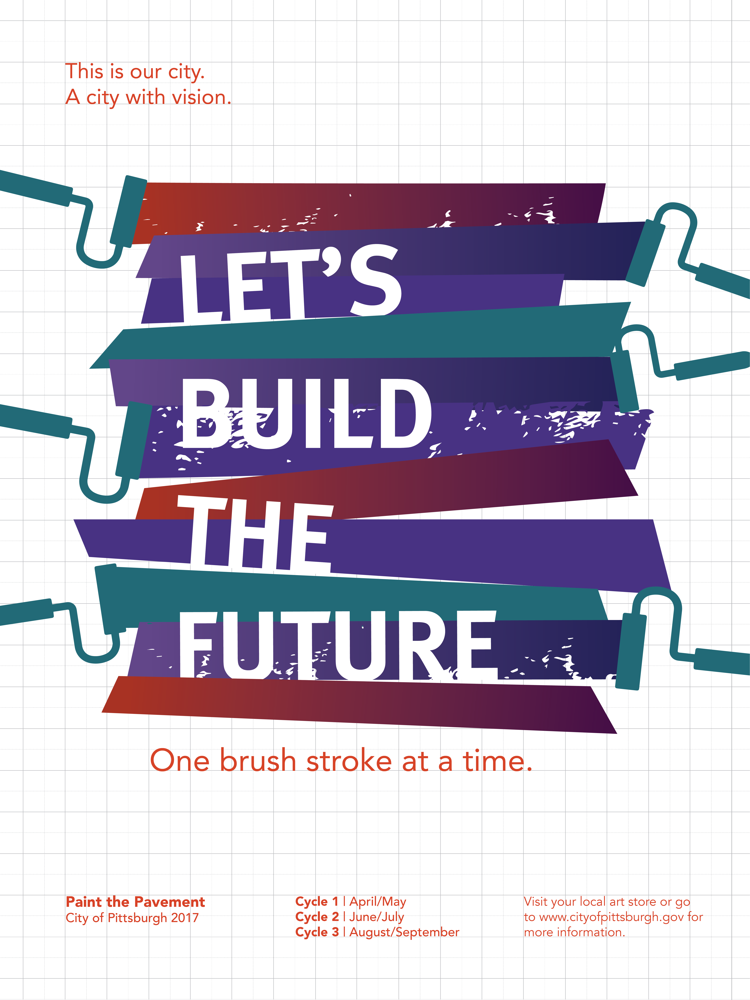

Paint the Pavement
Challenge
Pittsburgh, PA has been chosen as the next city to host Paint the Pavement, a national program that promotes community building and public safety using art as a means to transform dangerous roadways into neighborhood assets. As a designer, my goal was to create the visual identity for this new citywide initiative.
Outcome
Two print pieces, a book and poster, forming a designed system to inform Pittsburgh residents about the Paint the Pavement movement and encourage initiative to participate.
Skills Practiced
Print design
Branding
Information design
Final Pieces
Poster
I designed a poster and booklet to inform readers about the PTP program and application with clarity, friendliness and excitement. The poster, hung in community centers, school campuses, art stores, and other public places, draws the attention of active community members and introduces the program.
Booklet
Further information about the program's application process are enclosed in a booklet that can be picked up near the poster. The booklet orients the reader with background information on traffic safety, provides information about the program, and incites action. It includes organizational features such as timelines and checklists so as not to undermine the labor involved in the application process, but makes it approachable.
 

Background & Framing
Initial Research
I conducted some background research to learn more about Paint the Pavement and road violence in Pittsburgh. In cities that previously hosted Paint the Pavement, the face of the neighborhood was beautifully transformed, drivers were encouraged to slow down at intersections, and traffic safety improved. As it turns out, this was a city in need of some change as it ranked consistently low for driver safety in years reported.
Application Content
To start the project, I was handed a thick packet of plain text that outlined the entire application process, which was cumbersome and was difficult to navigate. In order to communicate the content inside, I first sought to establish an information hierarchy and reorganize the content to make it more sensible and approachable.
Process
Workmark
I began exploring visually to see what styles might be fitting for such a project: hand drawn or digital? messy or clean? I wanted to create a wordmark for the program that evoked artistry, and also highlighted Pittsburgh's unique infrastructure. The resulting mark carries the bridge metaphor throughout the visual system as a symbol of hope to the future.

 

Visual Language
I built process boards to study color and typography. I played with bright color palettes, and palettes that reflected the city of Pittsburgh. This resulted in a lot of clashing colors, so I decided to be less literal and opted for brighter, more whimsical color tones.
 Content & Form
For my concept, I was inspired by the uniquely abundant number of bridges in Pittsburgh's infrastructure. I wanted to portray the PTP program as metaphorically bridging the gap from the present to a desired future of safe and happy communities.
I had all of Pittsburgh as my audience, filled with diverse demographics, but I decided to target those who were active in community efforts and spread the word through them. For my system's entry point, I considered how I would reach my audience. The application content involved a lot of timelines and checklists, so I decided that print pieces would lend well to physical foldouts and forms. I considered mailers to reach homeowners, but they were too easily disposed of. I also played with ideas inspired by the form of paint rollers, but it was difficult to implement them in practical ways. Below are some visualizations and prototypes.
I chose to make a booklet because, while a standard choice, I felt the form served the application's purpose well as an approachable yet official-feeling medium. In my initial iterations, I wanted a grid that tied back to my bridge concept. You can view my full process work and iterations here!
I crafted my copy and imagery to compel readers through the booklet with a sense that the next step is always just within reach, to encourage people to act. Later, I added a grid background to give the pages a whimsical quality, like an artwork in progress.
I also wanted a poster to serve as the first touchpoint, drawing interest and introducing the program in rec centers and around town. These are digital sketches that led to my final.

 

Learning Outcomes
- Applying information design concepts to plain text content
- Crafting a tone and visual voice aimed at a broad audience
- Developing a visual system that has both style and substance, using grid, typography and imagery to support a driving concept